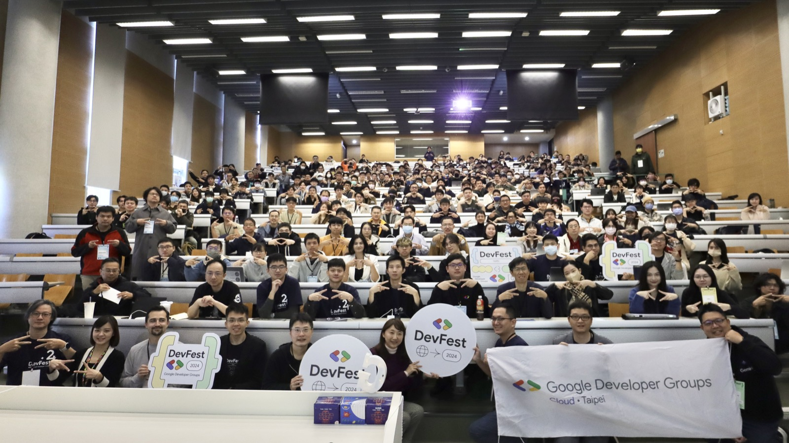
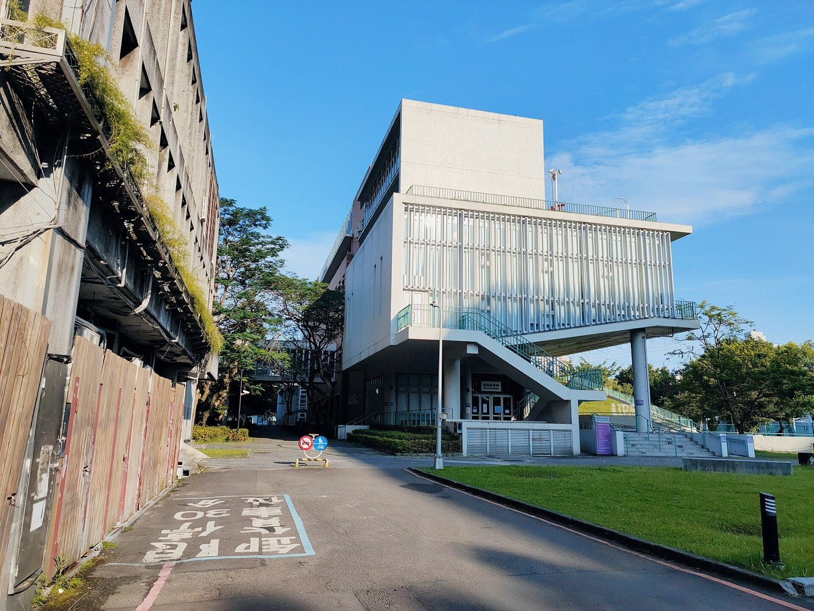
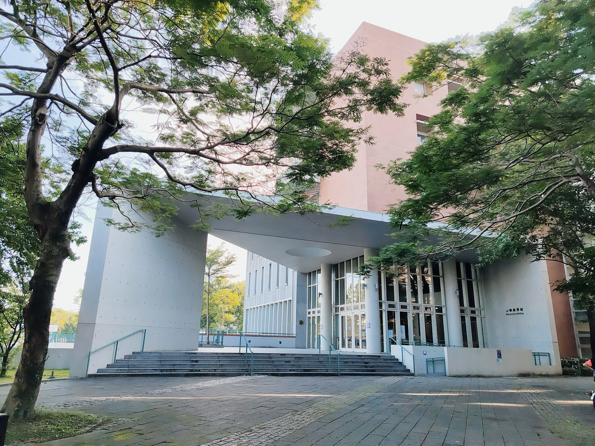
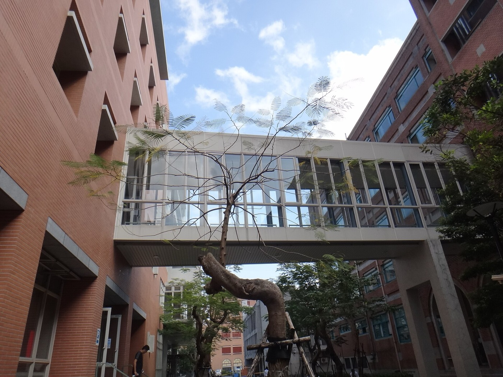
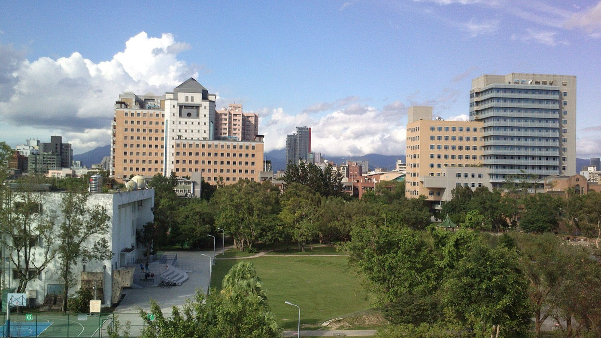
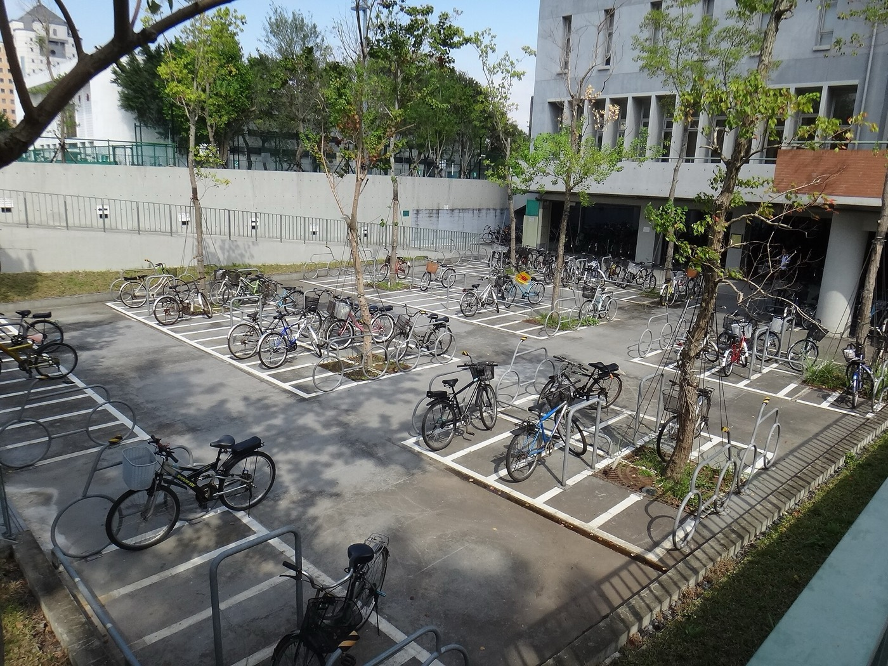
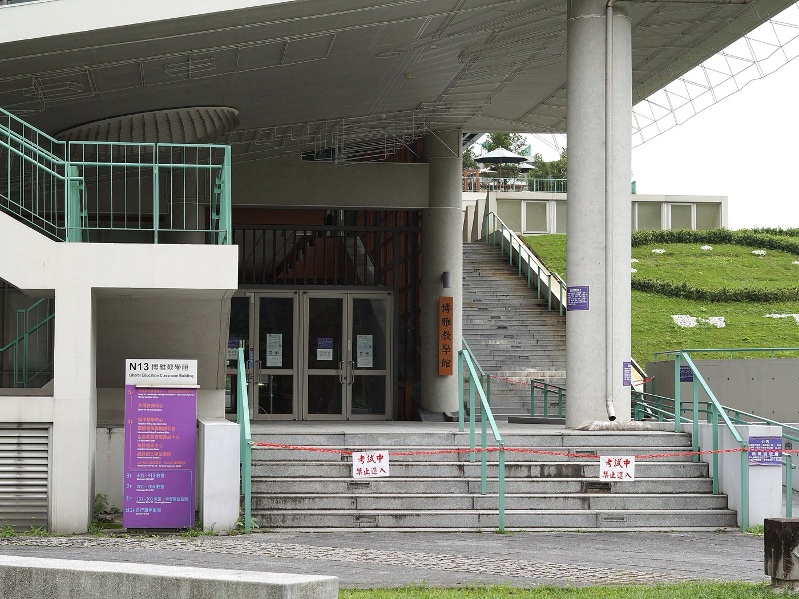
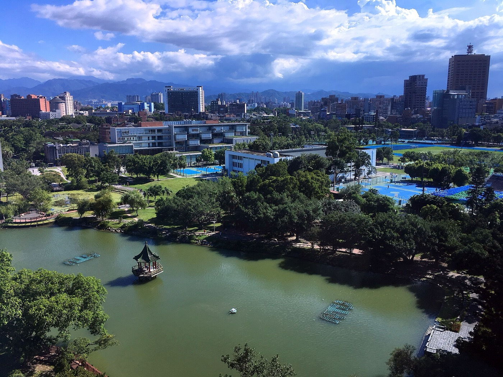

為 2026/12/5（週六）、預估 1,000 人規模的 Ship with Claude，提案以台大博雅教學館作為候選場地。
頂尖學府的校園品牌與學生開發者社群、整棟可彈性分流的多間教室、台北最友善的交通，並以「主場直播＋多室同步轉播」突破單廳座位上限，容納千人開發者大會。
台大校總區舉辦，連結全台最大的學生開發者社群與產學能量，對技術品牌與人才招募極具吸引力。
博雅101 華南講堂（400 席）主場直播，102／103 與 201／202／301／302 階梯講堂同步轉播，合計 1,583 席，容納全體 1,000 人開閉幕。
同棟 7 間階梯講堂與十多間平面教室，分軌時段全開，可同時跑 7 軌議程與工作坊。
捷運公館站步行 8–10 分，台北車站約 20 分、桃機經機捷約 50 分，對國際講者與外縣市與會者最便利。
緊鄰醉月湖與垂葉榕道，與普通教學館空橋連通，交流散步的天然亮點，校園氛圍獨具特色。
教學空間租金遠低於商業展館，省下的預算可挪去茶點、紀念品與體驗，提升與會者感受。
大型開發者大會 DevFest Taipei 即在博雅 101 舉辦，千人級活動已實際在此場地成功運作——「主場直播＋多教室分流」的模式經過驗證，不只是紙上規劃。
以下為博雅教學館與校園實景照片，搭配各空間用途建議；室內細部配置以實際場勘為準。

images/ntu/03-boya101-full.jpg
images/ntu/01-ext-east.jpg
images/ntu/02-entrance-gate.jpg
images/ntu/04-skybridge.jpg
images/ntu/05-campus-view.jpg
images/ntu/06-bike.jpg
images/ntu/07-entrance-plaza.jpg
images/ntu/08-campus-lake.jpg照片來源：Wikimedia Commons（CC BY-SA），作者 Bighornedowl、B01401122、Solomon203、Peacearth、FireFeather、Howard61313；提案參考用途。
各教室皆內建以下基本設備；直播轉播訊號設備、額外燈光音響可外租或自備（仍以場地正式報價與規範為準）。
依台大收費標準表，本場地不對外提供公眾無線網路（租用視聽設備者另附一台教學用電腦可上網）。千人活動建議自備行動網路／MiFi 或臨時無線基地台，並與校方另議。
博雅101 華南講堂為主場直播，訊號分流至 102／103 等階梯講堂同步轉播，突破單廳座位限制容納千人（直播設備外租或自備）。
各教室固定投影機與布幕，並配 1F 四合一電視牆；博雅101 華南講堂備三投影機，講堂視線清楚。
主場 101 華南講堂擴音與無線麥克風；各教室固定喇叭，覆蓋階梯講堂空間。
與普通教學館空橋連通，必要時可再借鄰棟教室擴充軌道，動線不離室內。
階梯講堂為固定階梯座位附寫字桌板；平面教室可彈性排桌，兼顧聽講與動手做。
設電梯與無障礙設施，B1 自行車停車約 750 席，校園周邊另有公有停車場。
以下依台大「教學館教室借用管理及設備使用收費標準表」(113.10.01) 與借用系統公開資料整理（全天＝08:00–17:00）。下表「全天費用」為各教室場地清潔費（含水電、垃圾、桌椅、風扇）＋視聽設備費（投影機）＋冷氣空調費的未稅金額；整場另計人事管理費（每館一份 3,000）與博雅1F 電視牆（如用），校外單位再加 5% 稅。
| 教室 | 樓層・型態 | 可容納人數 | 全天費用（未稅） |
|---|---|---|---|
| 博雅101／華南講堂 | 1F 階梯講堂 | 400 | 16,400 |
| 博雅102 | 1F 階梯講堂 | 279 | 13,500 |
| 博雅103 | 1F 階梯講堂 | 278 | 13,700 |
| 博雅202 | 2F 階梯講堂 | 213 | 12,250 |
| 博雅201 | 2F 階梯講堂 | 164 | 11,950 |
| 博雅301 | 3F 階梯講堂 | 128 | 11,950 |
| 博雅302 | 3F 階梯講堂 | 121 | 11,950 |
| 博雅203–206・303–312（14 間） | 2–3F 平面教室 | 20–30 | 10,750 |
| 7 間階梯講堂合計 | 1,583 席 | 91,700 | |
博雅101 華南講堂（400 席）作主場直播，博雅102（279）、博雅103（278）同步轉播——三間皆位於 1 樓、同層相連，合計 957 席，動線最單純，可容納近千人開閉幕與三軌議程。
台北是台灣首都與政經文化中心，台灣大學位於市中心大安區，是台灣規模最大、學術聲望最高的綜合大學，校園緊鄰公館商圈與捷運站。台北桃園國際機場有來自亞洲與全球的密集航班，自機場經機場捷運可快速進入市區，國際與會者抵達極為便利。
與會者來自台灣、新加坡、日本、美國、韓國等地。場地位於台北市大安區羅斯福路四段 1 號台大校總區，緊鄰捷運公館站，與台北車站、桃園機場間大眾運輸串連便利。
捷運松山新店線（綠線）公館站 2 號出口，沿羅斯福路步行約 8–10 分鐘即達校門與博雅館，是最主要的抵達方式。
國際線主要門戶，搭機場捷運至台北車站約 40 分鐘，轉捷運板南線、松山新店線至公館站，全程約 1 小時。
台北市區松山機場（日本、上海等航線），搭捷運文湖線轉松山新店線至公館站，約 30–40 分鐘。
高鐵、台鐵「台北站」轉捷運至公館站約 20 分鐘；中南部與會者當日往返便利。
台大、公館站為大型公車轉運點，羅斯福路、新生南路多線公車直達，下車即達校園。
校內停車有限，B1 自行車位約 750，建議多搭乘捷運與公車；周邊有公有與民營停車場。